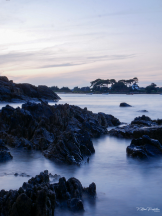
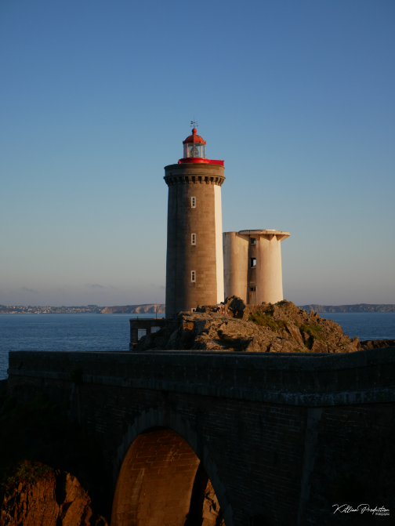

La Bretagne, région de l'ouest de la France bordée par l'océan Atlantique, est connue pour ses paysages sauvages, sa culture celtique et ses spécialités culinaires. La région abrite des sites historiques, des villages pittoresques et des plages de sable fin.

Carantec
Carantec est une ville côtière située dans le Finistère, en Bretagne, réputée pour sa beauté naturelle exceptionnelle. Située dans la baie de Morlaix, la ville offre des vues spectaculaires sur l'océan Atlantique et la Côte de Granit Rose, ainsi qu'un accès facile à de superbes plages de sable fin.
Les vacanciers apprécient particulièrement les nombreuses activités de plein air disponibles à Carantec, notamment la randonnée, la natation, la voile, la pêche et le golf. Les sentiers de randonnée côtiers sont particulièrement populaires, offrant des vues imprenables sur les paysages marins et la faune locale.
La ville abrite également des sites historiques et culturels, tels que le Château du Taureau, une forteresse datant du 16ème siècle construite sur une petite île au milieu de la baie de Morlaix, ainsi que l'Église Sainte-Thérèse, une église catholique construite au début du 20ème siècle et renommée pour ses vitraux colorés.
En plus des attractions naturelles et culturelles, Carantec est également connue pour sa gastronomie, en particulier ses fruits de mer frais. Les restaurants locaux proposent une variété de plats de fruits de mer, notamment des huîtres, des moules, des crabes et des homards, ainsi que des spécialités bretonnes comme les crêpes et le cidre.
Que ce soit pour profiter de la beauté naturelle de la région, explorer l'histoire et la culture locales, ou savourer la cuisine bretonne traditionnelle, Carantec est une destination de choix pour les vacanciers en quête d'une expérience authentique et mémorable en Bretagne.

Le Phare du minou
Le phare du Minou est un phare situé sur la côte ouest de la France, dans le Finistère en Bretagne. Construit en 1848, le phare est un monument historique de la région, célèbre pour son architecture élégante et sa vue imprenable sur l'océan Atlantique.
Le phare est accessible aux visiteurs qui peuvent monter jusqu'au sommet pour profiter d'une vue panoramique sur la mer et les environs. La montée est un peu difficile mais cela en vaut la peine pour admirer la beauté naturelle de la région.
Le phare est également entouré de nombreux sentiers de randonnée côtiers, offrant des vues spectaculaires sur la côte rocheuse de la Bretagne et les îles avoisinantes. Les visiteurs peuvent également se détendre sur les plages de sable fin à proximité, ou explorer les villes et villages pittoresques de la région, tels que Plouzané et Brest.
Le phare du Minou est également important pour la sécurité maritime, aidant les navires à naviguer en toute sécurité autour de la côte bretonne. Les gardiens de phare locaux, qui ont travaillé dur pour maintenir le phare en bon état au fil des ans, sont également une partie importante de l'histoire et de la culture de la région.
En somme, le phare du Minou est une destination incontournable pour les amateurs de nature, les amateurs d'histoire et les passionnés de l'océan Atlantique. La beauté de la côte bretonne, combinée à l'histoire et à la culture locales, en fait un lieu de visite unique et mémorable.